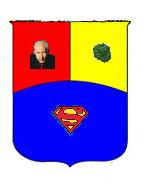
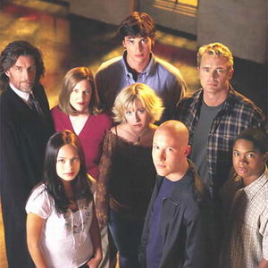
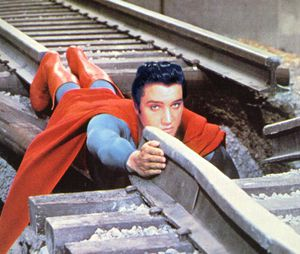
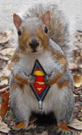
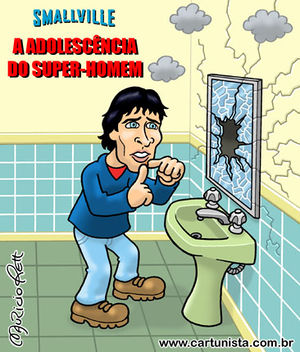
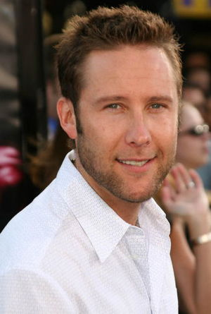
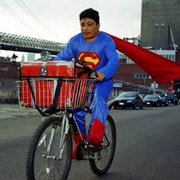
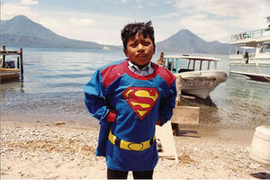

Smallville
 De: La Frikipedia, la enciclopedia extremadamente seria.
De: La Frikipedia, la enciclopedia extremadamente seria.
| De la serie ciudades del mundo:
|
| Esmal-bil
|
|
|

|
| (Bandera)
|
(Escudo de armas)
|
|
| Topónimo oficial
|
Villa pequeñísima
|
| País
|
Yunaited esteits
|
| Código postal
|
555
|
| Superficie
|
De dos dimensiones. Solo lo que se ve existe
|
| Altitud
|
No, es llano
|
| Distancia
|
A tomar por saco
|
| Fundación
|
1938
|
| Población
|
Menguante
|
| Gentilicio
|
smallvivilitano
|
| Alcalde
|
Lex Luthor
|
| Para el final de la tercera temporada había más gente con poderes que normales
|
«Kal-el, yo soy tu padre»
~ Jorl-El revelando la verdad
«Clark yo soy tu padre»
~ Jonathan Kent revelando la verdad
«Yo soy tu padre... ¡ah no, tu no eres Luke, disculpa!»
~ Darth Vader equivocándose de saga
 ...tú sabrás que has hecho que todo el pueblo te mira
 ¿Y tu crees que tu trabajo es una mierda?
Smallville es una pequeña ciudad en algún lugar de Kansas que no le importaba a nadie hasta que un montón de meteoritos llenos de mierda verde se estrelló justo en medio de todo. En total tenía 44 millones de habitantes.
Es donde vive Clark Kent de joven, acompañado de la zorra de Lana Lang que cada año tiene un novio nuevo.
En esta población durante los primeros cinco años cada semana había un nuevo friki de la kriptonita que, por comer kriptonita, morir en kriptonita o follar cerca de la kriptonita desarrolla un superpoder que inevitablemente utilizan para ser supervillano, hasta que la radiación en vez de matarlos les dió poderes. Hubo una ocasión en que un bebé estaba infectado por la kryptonita y empezó a echar gases venenosos que inmoviliza cualquier persona dentro de un radio de cinco kilómetros y los contagió de lepra seborréica esponjeiforme. La escuela secundaria es la única escuela en Smallville. Un 47% de los estudiantes no llegó vivo a su graduación.
descubren a Clark Kent, que descubre a su vez su debilidad y los regresa a su estado normal, los manda a una institución o los ata. Es importante hacer notar que, pese a ser un pueblo con millones de habitantes, siempre se pone en peligro a algún amigo de Clark, preferentemente a la zorra de Lana, que recibe una contusión en la cabeza justo antes de que Clark lo salve poniendo en acción sus poderes.
De ves en cuando descubre un superpoder que se vuelve indispensable justo después de ser descubierto.
Historia de Smallville
 Esta imagen estaba en el artículo de supermán y la reciclé...je, je ,je
Smallville es un pueblo a las afueras de Metropolis. Es donde transcurren los primeros años de Superman, en los que Clark Kent se dedica a evitar que todo el mundo se entere de su identidad secreta, aunque en cada día otra persona más se entera del secreto. Afortunadamente en el pueblo son demasiado tontos para enterarse a pesar de las numerosas pruebas.
cada día aparece un friki mutante en el Instituto. Mata o secuestra a alguien. Es encarcelado o muerto por Supermán y sus amigos, un par de horas después alguien dispara a Lex Luthor. Clark Kent se vuelve malo por comer Kriptonita roja adulterada, pero más tarde se le pasa.
Un bicho raro le roba sus poderes a Clark, pero como tambien le roba sus debilidades lo exponen a kriptonita y Clark los recupera. Por la tarde alguien vuelve a disparar a Lex Luthor.
Y al final del día hay un evento cósmico que amenaza acabar con el mundo, para luego resolverse sin explicación aparente y al día siguiente a nadie parece importarle lo que pasó, excepto a Lex Luthor.
El lugar de reunión de los amigos de Clark es el hospital, que es donde acaba alguno de ellos, incluso ya los médicos se saben el nombre de ellos de memoria, incluso se mandan postales navideñas.
Cada día se escapa un mutante adolescente de uno de los proyectos de Lex Luthor y busca venganza para finalmente ser capturado o muerto por Clark.
Habitantes
 clarki también tuvo espinillas
- Clark Kent : Hijo de Jor-El y Lara ( El de krypton ). Futuro Superman. Adoptado en la tierra por Jonathan y Martha Kent. Cayó en su campo de maíz y decidieron adoptarlo para poder seguir pegándole por haber hecho esto. Poco a poco ira descubriendo sus habilidades , y su pasado kriptoniano. Tenía la rara costumbre de llevar los calzoncillos por fuera, cosa que más tarde se convertiría en una moda entre la jet-set de superheroes y para colmo le salió super barato. Para ir de fiesta cogía su ropa de su perchero y se echaba su perfume.
- Lois Lane: Prima de Chloe y futura esposa de Clark. No le interesaba el periodísmo hasta que sus padres le dieron a elegir entre eso y trabajar, cuando entra a formar parte del Inquisitor y después entra a trabajar al Daily Planet, para así darse a conocer como la gran periodísta analfabeta de los cojones.

Cloe provocando a Clark para que le de a probar su
Kryptonita- Chloe Sullivan: Extra-ordinaria reportera, tiene la manía de chupar la roña de las uñas de los dedos gordos de los pies muy asquerosa. Estudia en la Universidad del planchazo con Lana. Ella se reconoce adicta a la kriptonita lo que le dá el extraño poder de revivir a las personas, o eso cree ella que está muy puesta de kriptonita.
- Oliver Queen: Hace amistad con Clark, fastidia a Lex y tiene un romance con Lois Lane. En su juventud fue compañero de Lex Luthor en el internado del planchazo, al cual inició en el mundo La mujer que marea, chema el panadero, Aquaman y nuestro Clark. Deja a Clark en Smallville y se va con su grupo para desmantelar la sección 33.1, Pero después de robar los manteles, Lex compró más y se reorganizaron.
- Jor-El: El padre muerto de Clark y miembro de la casa real de El y del consejo de ciencia de Kryptón. Es la pesadilla de toda persona: tu padre muerto te putea desde el infierno eternamente. Se ha comunicado con su hijo de maneras misteriosas a través de distintos objetos: desde su superpene, desde su perchero... La llave octagonal posee tecnología kriptoniana, que la activa, las cuevas Kawatchee o una clase de Inteligencia Artificial Kryptoniana la Fortaleza de la Soledad. Se comporta de una manera cruel y poco compasiva, aunque es bueno en el fondo... en el fondo de un pozo. No se lleva nada bien con Jonathan Kent y a la que puede intenta quitarlo del medio sutílmente: coches bomba, francotiradores. Pero el cabrón no se murió hasta que a él le dió la gana.
Lana siendo espiada por Clark con su telescopio
- Lana Lang ( click para mas info aqui/[1]: Es el amor adolescente de Clark Kent, ex-administradora de "The Talon", que es el café de la ciudad, estudia en la Universidad del planchazo junto con Chloe. Sus padres murieron durante la lluvia de meteoritos o eso contaba ella. En realidad sus padres le tiraron a un pozo y a los siete días salió y se vengó. Se casa con Lex en contra de su voluntad para espiar a Lex, supuestamente había muerto, pero esta tía es dura de pelar. Pero en realidad huye a China con tal de separarse de Lex, pero este la encuentra. Se reconcilia con Clark, yéndose a vivir juntos, pero empieza a mostrar su lado oscuro debido a su deseo de venganza contra Lex Luthor. Ella abandona a Clark en un bosque diciéndole que iban a dar un paseo.
En su juventud tuvieron una relación muy estrecha
- Lex Luthor: Es un gran amigo de Clark durante su juventud incluso tuvieron una relación gay cuyo fruto de amor es Conner Kent, Lex no paraba de hacer regalos a su amigo Clark, visitas nocturnas a la cocina de su casa, al granero... y todo el rato le acosa. Después empieza a acosar tambien a la cerda de la amiga de Clark, Lana Lang, esa puta con cara de niña buena que se mete en lios para llamar la atención. ¿Qué hace un rico de 21 años acosando a todas horas a unos críos de 15? Se sabía que Lex podría acabar siendo un violador, pero es que es un asaltacunas, es un pedófilo. destinado a convertirse en su peor enemigo. Su padre, el millonario Lionel Luthor, lo educó estrictamente para ser como él. Brillante e inteligente, Lex perdió su pelo a los 9 años durante la lluvia de meteoritos, aún lo está buscando. Todos los afectados por la kriptonita desarrollaron habilidades especiales a él solo lo dejo calvo. Lex lucha para no ser como su padre pero finalmente acaba sucumbiendo a su lado oscuro. Es apresado por el supuesto homicidio de Lana Luthor, pero esta huyó a China. Luego queda libre y continua con sus planes : hacerse una peluca.
- Lionel Luthor Es el exigente padre de Lex Luthor, conocido hombre de negocios sin escrúpulos. Se entera de los poderes de Clark y obliga a Lana a casarse con Lex amenazándola con revelar la relación homosexual de estos dos. Pero ahora parece ser que es bueno. Es un personaje complicado. Parecía que iba a morir , pero se lo vuelve a ver, aunque desmayado en una cuneta borracho perdido.
- Martha Kent: Es la madre adoptiva de Clark, una vez que Jonathan Kent fallece toma el cargo de senadora de Kansas, se convierte en senadora de Estados Unidos. Fue acusada por malversación de fondos y murió en la cárcel.
 Lex se hizo una peluca con los pelos de los cojones
- Jonathan Kent: Padre adoptivo de Clark Kent, siempre se mostró terco a las advertencias de Jor-El, murió en la granja Kent por un infarto, pero se le aparece en espíritu a Clark. En Estados Unidos según las series, no se mueren nunca del todo.
- Pete Ross: Mejor amigo de Clark que tuvo que abandonar Smallville para no traicionar su secreto. Futuro esposo de Lana Lang, hasta que unos fanáticos queman su casa y lo asesinan a pellizcones.
- Whitney: Primer novio de Lana que intentó cambiar su vida alistándose en el ejército. Murió en el servicio, le cayó un misil tierra-tierra mientras cagaba.
- Milton Fine: Prototipo de Inteligencia Artificial Kryptoniana, Llegado a la Tierra en una patera extraterrestre, se hace pasar por profesor de la universidad del planchazo de Clark y es quien termina de poner en contra a Clark y Lex. Su misión: traer al general Zod a la tierra para acabar con Clark y dominar el mundo o al menos sacar fotos para hacer un pase de diapositivas en Kriptón.
- Zod: Personaje sin aspecto físico: Zod el peor enemigo de Jor-El, llega a Smallville mediante Milton Fine poseyendo a Lex Luthor ya que por su personalidad oscura es el mejor candidato. Brainiac destruye las conexiones eléctricas y los ordenadores de todo el mundo y se origina el caos en la tierra por no poder nadie ver porno en la red. pelea con Clark por un mundo libre y sin porno, combate que afortunadamente gana Clark.
- Bizarro: Es en realidad un fantasma, un fallido experimento kriptoniano que, al posesionarse de Clark, se duplicó a si mísmo. Es el lado opuesto de Clark. Así mismo, la kriptonita azul, que deja sin poderes y mullidito a Clark, a Bizarro lo fortalece. ayudado por Milton Fine, se hace pasar por Clark, mientras que este estaba inhabilitado por un castigo, impuesto por Jor-El, en la Fortaleza de la Soledad por no cortar el césped cuando se lo dijo.
Lugares
hestos hameriquanos tienen cada farta hortográfika...
- El salón de los Luthor: esta casa solo tenía fachada y un salón, el arquitecto de la casa fue ejecutado por gracioso.
- El cobertizo: rara vez Clark se hallaba en su habitación. Es donde se hacía las pajas, espiando a Lana, su vecina. Tiempo después la casa de Lana desaparece o el catalejos de Clark es muuuuuuy potente... seguro que estás pensando que tenía supervista, pero en esa época aún no la tenía desarrollada, y si no, ¿para qué coño quería un catalejos?
- The Tallon: Es el bar de copas donde van los de Smallville. Allí también se hacía pajas en secreto Clark.
- El hospital: Es donde se reunían todos a diario cuando uno de ellos había sido atacado por un mutante. Tras averigüar el secreto de Clark, acababan con amnesia y hospitalizados...algo sospechoso. Clark estaba tanto tiempo en los hospitales que tuvo que buscar su fortaleza de la soledad dentro del hospital para hacerse sus pajas.
- El manicomio: es donde acaban todos los frikis mutantes, los que sobreviven claro.
- La cocina de la casa de los Kent: El resto de la casa es un misterio.
- El instituto de Smallville: se rumoreaba que aquello era un instituto, pero en realidad era la sede del Inquisitor. Para disimular, unos actores daban vueltas por los pasillos haciéndose pasar por alumnos, algún que otro pasaba la treintena.
- Las cuevas: Allí las pinturas se cambian a su antojo, como las caras de belmez.
- El laboratorio de la Luthor corporation: allí es donde Lex se hacía las pajas.
 Así deja la kryptonita dorada a Clark
Geología de Smallville
La geología de Smalville se caracteriza sobre todo por la Kriptonita, la hay por donde quiera que pises.
- Kryptonita Verde: Es una roca o fragmento de meteorito de color verde. La Kryptonita verde, la única variedad potencialmente mortal para Clark. Primero causa síntomas suaves tales como náusea, vértigos, dermatitis seborréica ,parálisis y diarréa mental .
- Kryptonita roja: Causa efectos aleatorios en los nativos de Krypton. Tiene efectos negativos para Clark, causa una personalidad rebelde y malvada, tales como tocar los timbres de los vecinos, iluminar a las parejas que se lo montan en el parque a oscuras con una linterna, hacer garabatos en las paredes...
- Kryptonita negra: Esta divide a Superman en dos individuos, digamos que serían Kal-El y Clark (Malo y bueno). se crea Kryptonita negra cuando la Kryptonita Verde se asusta al ver a Jack Bauer. También tiene efecto en humanos.
- Kryptonita plateada: Es una roca de carbonita a la cual se le ha adherido un material biológico. A Clark le producen alucinaciones ridiculas tales como la visión de la mujer que marea.
- Kryptonita dorada: Elimina los superpoderes de los Kryptonianos de forma permanente, una putada que te cagas.
 así le deja a Clark la kriptonita azul
- La Kryptonita azul: Mata a los Bizarros (los clones de Superman), a superman lo deja hecho un adefesio.
- Kryptonita Blanca: Extermina toda vida vegetal, sea Kryptoniana o no. Provoca la descomposición inmediata de las plantas bajo su exposición. En resumen, una mierda de piedra.
Otras variedades de Kryptonitas
- Anti-Kryptonita: No tiene efecto sobre los Kryptonianos con superpoderes, pero tiene el mísmo efecto que la Kryptonita verde en los nativos de Krypton sin superpoderes. Para que se jodan.
- Kryptonita X: Creada por Supergirl mientras experimentaba con Kryptonita verde. No tiene efecto sobre los Kryptonianos, ni a los humanos ni a los vegetales. Solo sirve para tirársela al enemigo en un ojo.
- La gema de Kryptonita: Amplia los poderes de los residentes de la Zona Fantasma, permitiéndoles proyectar ilusiones sobre el mundo real o controlar las mentes y hacer que dos tíos se morreen y se partan el nabo en la zona fantasma.
Afectados por la Kryptonita

XD afectado por kryptonita
- Greg Arkin: un estudiante, atacado por un insecto afectado por radiaciones de kryptonita el cual le pica en un huevo y se hace radiactivo.
- Arnold: posee unos extraños poderes incendiarios a causa de la kryptonita que utiliza contra todo aquél que pueda evitar que su equipo gane. Pídele que te haga la quiniela.
- Sean Kelvin: un asesino afectado por la kryptonita que sufre una hipotermia permanente y sirrosis seborréica.
- Cassandra Carpenter: tiene visiones del futuro, y Lex trata de utilizarla para conocer el suyo y al ver su futuro le da un patatús y se muere, la hijaputa.
- Jodi Melville: tras una dieta de vegetales afectados por la krytonita pierde peso mucho más rápido de lo normal y necesita saciar su apetito de la forma que sea. Come tres kilos de lentejas y al pasar por debajo de un electroimán, un operario lo activa y le desgarra el estómago.
- IP anónima: Este no le afectó la kryptonita, es así de nacimiento y que se deje de excusas.
- XD: Desde que probó la kryptonita no para de reírse en posición fetal.
- Alvin y las ardillas: Antes hablaban como Carmen de Mairena, ahora hablan así, por que se la metieron por ahí.
- Windows: Pasó del 95 al 98, luego a XP y finalmente vista. Es el mutante más temido.
Curiosidades
- Martha la madre de Clark decidio adoptarlo porque no podia tener hijos... luego de trabajar para Lionel Luthor queda sospechosamente embarazada y dice que fue gracias a los poderes magicos de la nave de Clark.
- A Lex Luthor le encantan los casamientos, si se cruza mas de 3 veces con una misma mujer ya la convierte en su esposa.
- No eres considerado de la familia Luthor si nadie trata de matarte.
- A Clark le da miedo volar?
- La camioneta roja de los Kent es indestructible?
Versión culebrón venezolano de Smallville
Todo comienza cuando los papás de supermanito deciden abandonar a su hijo del alma, Clark Jesús de todos los Santos y Don Omar.
Su papá lo aventó al carajo en una navecita en busca de un futuro mejor, pero unos cuatreros casi lo impiden, pero él escapa y en la tierra le esperaba un futuro chévere.
Su llegada no pudo ser más calamitosa, cayó justo encima de la plantación de marihuana de un granjero llamado Jhonatan Idelfonso María del Monte. Lo adoptó para que le indemnizara por semejante atropello y lo estuvo explotando hasta que murió de un infarto
Advertencia
- Ponerse el traje de Supermán no hace que vueles.
- La kryptonita fluorecente hace que se te ilumine el estómago si te lo comes.
- La kryptonita por el culo hace que se te ilumine el colon.
Autor(es):
- Roms
- Khazike Khashondo
- Plasnisk
- AlemanH
- Dannylopuz
- Frikipedico 3
- Sadico
- Super Wombat
- Gñapero Solitario
- Genericool
Frikipedia 2005-2016, Licencia
GFDL 1.2 - Extraído por FrikiLeaks